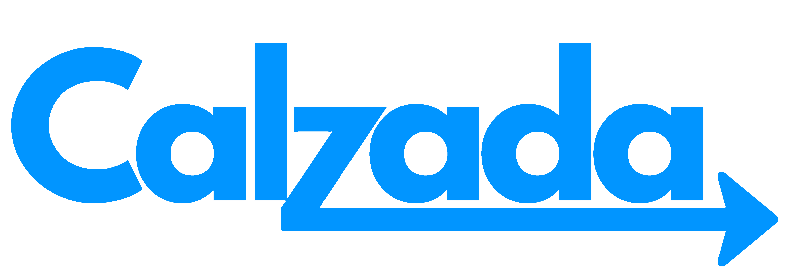

About
Calzada is a commuter guide platform envisioned to transform the way people travel across Calamba and nearby cities. Rooted in the word calzada, meaning road or pathway, the brand embodies the idea of direction, clarity, and movement.
The platform integrates multiple modes of transport, including jeepneys, buses, P2P, UV Express, and tricycles. Calzada offers a route suggestion feature that presents different travel options based on estimated duration, fare cost, and walking distance, helping commuters compare alternatives and choose the most convenient journey.
Calzada also highlights multi-modal navigation, enabling commuters to combine different transport modes in a single journey. The platform is built with a responsive design, making it accessible on both desktop and mobile devices, and features a user-friendly interface that simplifies route planning even for first-time users.
Goal
The primary goal of Calzada is to empower commuters by providing accurate, transparent, and easy-to-use transit information. By centralizing data on routes, fares, and transport options, the website aims to reduce commuting stress, promote informed decision-making, and improve overall mobility in the city. Ultimately, Calzada seeks to become a trusted digital companion for everyday commuters, helping them save time, manage expenses, and travel with confidence.
Bakit Calzada?
Direction
Hindi ka na maliligaw – bawat ruta ay klaro at tumpak.
Transparency
Walang hidden charges. Alam mo ang pamasahe bago ka sumakay.
Komunidad
Gawa para sa mga commuter, ng mga commuter. Libre at accessible.